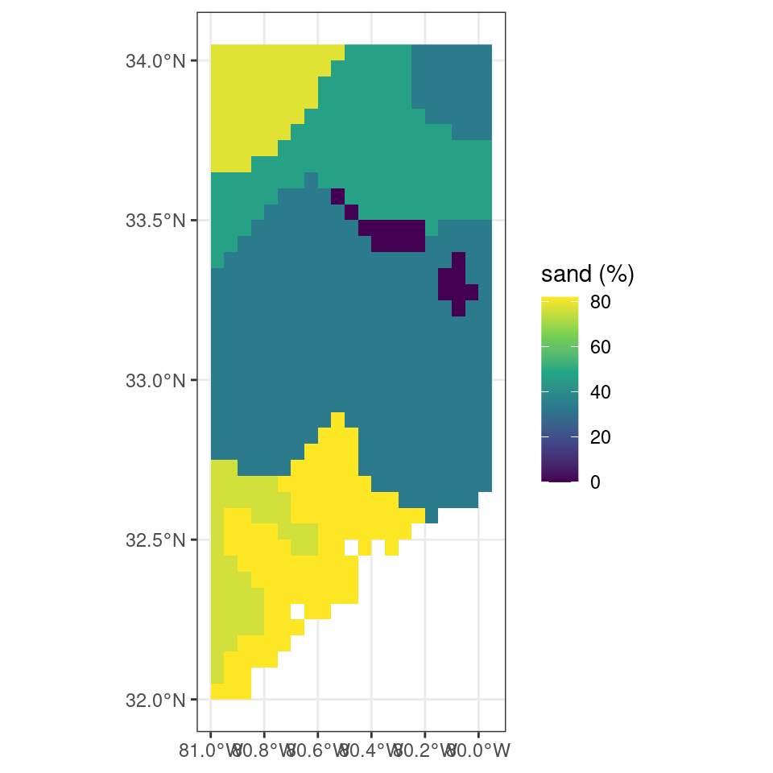

# Downloading a time series of mean CO2 levels from NOAA
# and storing it in a temporary file
url <- "https://gml.noaa.gov/webdata/ccgg/trends/co2/co2_annmean_mlo.csv"
download.file(
url,
file.path(tempdir(), "co2.csv")
)2 Accessing data
There is a wealth of data available within the context of geography and environmental sciences. However, how to efficiently access these data sources is a skill in its own right.
In general you have to know:
- where to find data, what are common sources
- how to download the data
- how to read in the data once downloaded
- how to interpret the data (domain knowledge)
2.1 Finding open trustworthy data
Environmental data can be found in a number of locations and a general web search will point you to them if you know the name of a data set you have in mind. If you want to broaden your search into new data products the best sources are often governmental organizations. Governments collect and sponsor data acquisition and retention, with various administrations focusing on on particular topics, e.g. remote sensing, forestry, population statistics. For example, if you are looking for satellite remote sensing data it makes sense to look at for example the European Space Agency (ESA) data repositories or the United States National Aeronautics and Space Administration (NASA). If you are looking for spatially explicit population statistics Eurostat might be a good starting place to start your search. Most states keep inventories of their protected areas as well as detailed forest inventories. Similarly, weather agencies on a state or European level can provide wealth of data. Directing your searches toward state level agencies will land you with reliable sources of data.
Similarly, non-governmental organizations (NGOs), foundations and other non-profit organizations can be a valuable source of information. General street layouts, and location based information on businesses and other venues can be sourced from Open Street Map (OSM). The World Wild Fund (WWF) has contributed to biodiversity mapping initiatives. In general, non-profits and NGOs are trustworthy but in an age of disinformation and shadow lobbying you should verify if sources are common within scientific literature.nodo
Scientific literature can also be a valuable source of data products. However, finding these data products is often difficult as they are not necessarily centralized in a structured way or they might not even be shared publicly. Centralized repositories do exist. Noteworthy are Zenodo, an data repository for research data supported by CERN but holding vast stores of data on a variety of research topics. Similarly Dryad and Figshare provide long term storage of published research data.
Below you find a list of useful data sources:
- ECMWFR Copernicus Data Services (climate data)
- Copernicus Open Access Hub (access to the Sentinel remote sensing data)
- EOSDIS Digital Active Archive Centers (DAACs)
- Integrated Carbon Observation System (ICOS)
- National Ecosystem Observation Network (NEON)
- Scientific data repositories (open data downloads or deposits)
This list is not extensive and many other sources exist. However, I will source mostly from these data sources in the book. Some familiarity with the names of these data sources is therefore helpful. Depending on where data is hosted you can simply download data through your web browser or use the internal download.file() function to grab data to store it locally.
2.2 Gathering a handfull of pixels
The sections above (Section 2.1) assume that you download data locally, on disk in a particular format. However, many of the data sources described in previous section are warehoused in large cloud facilities. These services allow you to access the underlying (original) data using an Application Programming Interfaces (APIs), hence programmatically, using code. Mastering the use of these services has become key in gathering research data sets. Given the scope of this book I will focus on ways to gather small approximately analysis ready geospatial datasets using APIs.
2.2.1 Direct downloads
Before diving into a description of APIs, I remind you that some file reading functions in R are “web-enabled”, and can not only read local files but also remote ones (i.e., URLs). Getting ahead of ourselves a bit, the example code shows you how to read the content of a URL (of CO2 data) directly into your R environment.
Although using this functionality isn’t equivalent to using an API, the concept is the same. I.e., you load a remote data source (albeit without further subsetting or passing of any parameters).
# read in the data directly from URL
df <- read.table(
url,
header = TRUE,
sep = ","
)2.2.2 APIs
Web-based Application Programming Interfaces (APIs) offer a way to specify the scope of the returned data, and ultimately, the processing which goes on behind the scene in response to a (data) query. APIs are a way to, in a limited way, control a remote server to execute a certain (data) action. In most (RESTful) APIs, such query takes the form of an HTTP URL via an URL-encoded scheme using an API endpoint (or base URL).
To reduce some of the complexity of APIs, it is common that a wrapper is written around an API in the language of choice (e.g., R, Python). These dedicated API libraries make it easier to access data and limit coding overhead.
Dedicated API libraries
As an example of a dedicated library, we use the {MODISTools} R package which queries remote sensing data generated by the MODIS remote sensing (satellite) mission from the Oak Ridge National Laboratories data archive. A full description of their API is provided online.
# load the library
library("MODISTools")
# list all available products
# (only showing first part of the table for brevity)
MODISTools::mt_products() |>
head() product
1 Daymet
2 ECO4ESIPTJPL
3 ECO4WUE
4 GEDI03
5 GEDI04_B
6 MCD12Q1
description
1 Daily Surface Weather Data (Daymet) on a 1-km Grid for North America, Version 4 R1
2 ECOSTRESS Evaporative Stress Index PT-JPL (ESI) Daily L4 Global 70 m
3 ECOSTRESS Water Use Efficiency (WUE) Daily L4 Global 70 m
4 GEDI Gridded Land Surface Metrics (LSM) L3 1km EASE-Grid, Version 2
5 GEDI Gridded Aboveground Biomass Density (AGBD) L4B 1km EASE-Grid, Version 2
6 MODIS/Terra+Aqua Land Cover Type (LC) Yearly L3 Global 500 m SIN Grid
frequency resolution_meters
1 1 day 1000
2 Varies 70
3 Varies 70
4 One time 1000
5 One time 1000
6 1 year 500# list bands for the MOD11A2
# product (a land surface temperature product)
MODISTools::mt_bands("MOD11A2") |>
head() band description valid_range fill_value
1 Clear_sky_days Day clear-sky coverage 1 to 255 0
2 Clear_sky_nights Night clear-sky coverage 1 to 255 0
3 Day_view_angl View zenith angle of day observation 0 to 130 255
4 Day_view_time Local time of day observation 0 to 240 255
5 Emis_31 Band 31 emissivity 1 to 255 0
6 Emis_32 Band 32 emissivity 1 to 255 0
units scale_factor add_offset
1 <NA> <NA> <NA>
2 <NA> <NA> <NA>
3 degree 1 -65
4 hrs 0.1 0
5 <NA> 0.002 0.49
6 <NA> 0.002 0.49Using this information we can now formulate a full query for use with the API. Here, I download a demo dataset specifying a location, a product, a band (subset of the product) and a date range and a geographic area (1 km above/below and left/right). Data is returned internally to the variable subset, and the progress bar of the download is not shown.
# Download some data
subset <- MODISTools::mt_subset(
product = "MOD11A2",
lat = 40,
lon = -110,
band = "LST_Day_1km",
start = "2004-01-01",
end = "2004-02-01",
km_lr = 1,
km_ab = 1,
internal = TRUE,
progress = FALSE
)
# print the dowloaded data
head(subset) xllcorner yllcorner cellsize nrows ncols band units
1.1 -9370963.05 4445948.79 926.625433055834 3 3 LST_Day_1km Kelvin
2.1 -9370963.05 4445948.79 926.625433055834 3 3 LST_Day_1km Kelvin
3.1 -9370963.05 4445948.79 926.625433055834 3 3 LST_Day_1km Kelvin
4.1 -9370963.05 4445948.79 926.625433055834 3 3 LST_Day_1km Kelvin
1.2 -9370963.05 4445948.79 926.625433055834 3 3 LST_Day_1km Kelvin
2.2 -9370963.05 4445948.79 926.625433055834 3 3 LST_Day_1km Kelvin
scale latitude longitude site product start end complete
1.1 0.02 40 -110 sitename MOD11A2 2004-01-01 2004-02-01 TRUE
2.1 0.02 40 -110 sitename MOD11A2 2004-01-01 2004-02-01 TRUE
3.1 0.02 40 -110 sitename MOD11A2 2004-01-01 2004-02-01 TRUE
4.1 0.02 40 -110 sitename MOD11A2 2004-01-01 2004-02-01 TRUE
1.2 0.02 40 -110 sitename MOD11A2 2004-01-01 2004-02-01 TRUE
2.2 0.02 40 -110 sitename MOD11A2 2004-01-01 2004-02-01 TRUE
modis_date calendar_date tile proc_date pixel value
1.1 A2004001 2004-01-01 h09v05 2020168005635 1 13148
2.1 A2004009 2004-01-09 h09v05 2020168010833 1 13160
3.1 A2004017 2004-01-17 h09v05 2020168012220 1 13398
4.1 A2004025 2004-01-25 h09v05 2020168013617 1 13412
1.2 A2004001 2004-01-01 h09v05 2020168005635 2 13153
2.2 A2004009 2004-01-09 h09v05 2020168010833 2 13140A detailed description of all functions of the MODISTools R package is beyond the scope of this course. However, the listed command show you what a dedicated API package does. It is a shortcut to functional elements of an API. For example mt_products() allows you to quickly list all products without any knowledge of an API URL. Although more complex, the mt_subset() routine allows you to query remote sensing data for a single location (specified with a latitude lat and longitude lon), and a given date range (e.g., start, end parameters), a physical extent (in km left-right and above-below).
GET
Depending on your data source, you will either need to rely on a dedicated R package to query the API or study the API documentation. The general scheme for using an API follows the use of the GET() command of the {httr} R library.
You define a query using API parameters, as a named list.
# formulate a named list query to pass to httr
query <- list(
"argument" = "2",
"another_argument" = "3"
)You define the endpoint (url) where you want to query your data from.
# The URL of the API (varies per product / param)
url <- "https://your.service.endpoint.com"Finally, you combine both in a GET() statement to download the data from the endpoint (url).
# the write_disk() function captures
# data if available and writes it to
# disk at location "path"
status <- httr::GET(
url = url,
query = query,
httr::write_disk(
path = "/where/to/store/data/filename.ext",
overwrite = TRUE
)
)Below, we provide an example of using the GET command to download data from the Regridded Harmonized World Soil Database (v1.2) as hosted on the Oak Ridge National Laboratory computer infrastructure. In this case we download a subset of a global map of topsoil sand content (T_SAND, %).
# set API URL endpoint
# for the total sand content
url <- "https://thredds.daac.ornl.gov/thredds/ncss/ornldaac/1247/T_SAND.nc4"
# formulate query to pass to httr
query <- list(
"var" = "T_SAND",
"south" = 32,
"west" = -81,
"east" = -80,
"north" = 34,
"disableProjSubset" = "on",
"horizStride" = 1,
"accept" = "netcdf4"
)
# download data using the
# API endpoint and query data
status <- httr::GET(
url = url,
query = query,
httr::write_disk(
path = file.path(tempdir(), "T_SAND.nc"),
overwrite = TRUE
)
)Plotting the data downloaded shows a map of the percentage of sand in the topsoil.
Code
# libraries
library(terra)
library(ggplot2)
library(tidyterra)
sand <- terra::rast(file.path(tempdir(), "T_SAND.nc"))
ggplot() +
tidyterra::geom_spatraster(data = sand) +
scale_fill_viridis_c(
na.value = NA,
name = "sand (%)"
) +
theme_bw()
Note
Throughout the book, where possible, I will collapse the code which draws figures. This makes for a better reading experience. If you want to see the underlying code you can click on the “> Code” line to unfold the code chunk. If not code is presented a simple plot() function call was used.
Authentication
Depending on the API, authentication using a user name and a key or password is required. Then, the template should be slightly altered to accommodate for these requirements. Note that instead of the GET() command we use POST() as we need to post some authentication data before we can get the data in return.
# an authenticated API query
status <- httr::POST(
url = url,
httr::authenticate(user, key),
httr::add_headers("Accept" = "application/json",
"Content-Type" = "application/json"),
body = query,
encode = "json"
)